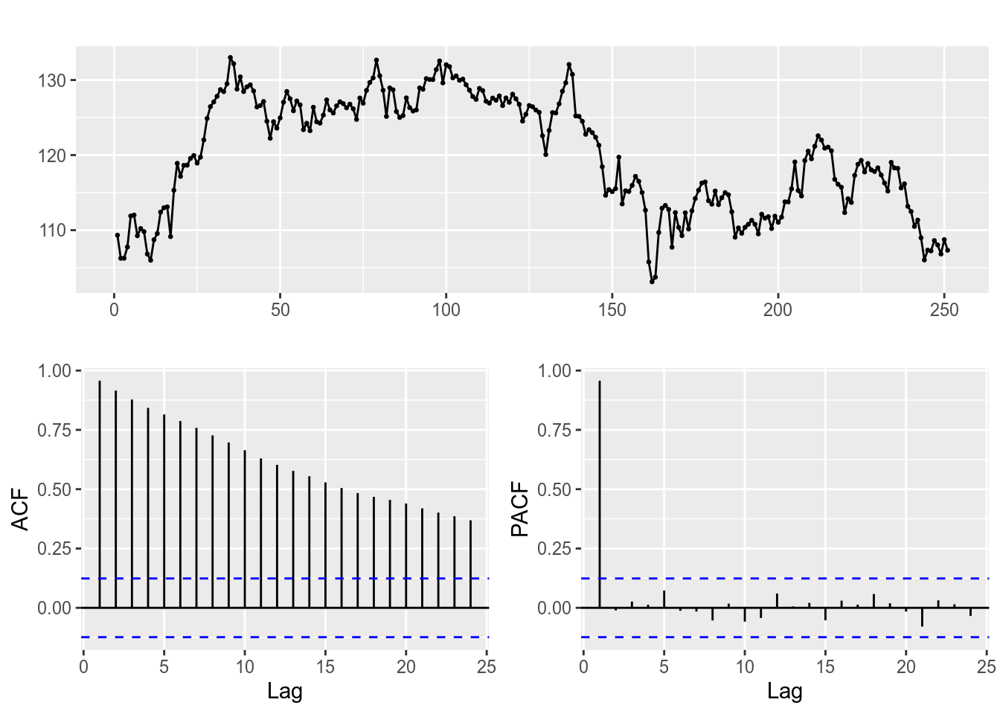

Коан 6 ARMA
Достигнем просветления в анализе временных рядов вместе с нашими друзьями, Stata, R и Python! В качестве анализируемых наблюдений используем данные по стоимости акций коммапнии
Applec 2015-01-01 по 2015-12-31: цена открытия/ закрытия, минимальная/ максимальная цены, объём и скорректиованная цена.
6.1 R
Традиционно начнём в r.
Загрузим необходимые пакеты:
library(xts) # работа с временными рядами
library(dplyr) # манипуляции с данными
library(ggplot2) # построение графиков
library(aTSA) # тест Дики-Фуллера
library(forecast) # прогнозирование ARMA-моделей
library(quantmod) # импортирование набора данных из интернета
library(lmtest) # проверка гипотезИмпортируем dataset AAPL прямо из пакета quantmod. Будем анализировать одномерный временной ряд от переменной AAPL. Close.
[1] "AAPL"Обозначим исследуемый набор данных как apple_df.
Визуализируем изучаемый временной ряд, его автокорреляционную и частную автокорреляционную функции.

По графику видим, что процесс напоминает случайное блуждание: медленно убывает автокорреляционная функция, первый лаг частной автокорреляционной функции не входит в доверительный интервал, остальные - входят.
Проверим стационарность ряда тестом Дики - Фуллера.
Augmented Dickey-Fuller Test
alternative: stationary
Type 1: no drift no trend
lag ADF p.value
[1,] 0 0.0708 0.664
[2,] 1 0.1616 0.690
[3,] 2 0.1670 0.692
[4,] 3 0.1321 0.682
[5,] 4 0.0120 0.647
Type 2: with drift no trend
lag ADF p.value
[1,] 0 2.15 0.99
[2,] 1 2.06 0.99
[3,] 2 2.24 0.99
[4,] 3 2.35 0.99
[5,] 4 2.65 0.99
Type 3: with drift and trend
lag ADF p.value
[1,] 0 1.75 0.99
[2,] 1 1.53 0.99
[3,] 2 1.64 0.99
[4,] 3 1.77 0.99
[5,] 4 2.17 0.99
----
Note: in fact, p.value = 0.01 means p.value <= 0.01 Тест выявил нестационарность на 5% уровне значимости (основная гипотеза – о нестационарности ряда).
Возьмём первую разность от ряда, чтобы сделать его стационарным (ведь только стационарные процессы могут быть описаны моделью ARMA (p, q) ) и снова построим автокорреляционную и частную автокорреляционную функции.

Index AAPL.Close
Min. :2015-01-02 Min. :-6.89000
1st Qu.:2015-04-04 1st Qu.:-1.02500
Median :2015-07-02 Median :-0.07500
Mean :2015-07-02 Mean :-0.00804
3rd Qu.:2015-09-30 3rd Qu.: 1.14499
Max. :2015-12-30 Max. : 6.17000
NA's :1 Ряд похож на стационарный.
Теперь построим несколько моделей, которые потенциально могут описать данный ряд, хотя уже заранее ожидается, что ряд в разностях будет описан ARIMA (0, 0, 0), что равносильно ARMA(0, 0), но всё же…
ARIMA (0, 0, 0):
Call:
arima(x = apple_diff, order = c(0, 0, 0))
Coefficients:
intercept
-0.0080
s.e. 0.1244
sigma^2 estimated as 3.867: log likelihood = -523.79, aic = 1051.58
Training set error measures:
ME RMSE MAE MPE MAPE MASE
Training set 8.078552e-15 1.966425 1.495158 99.55996 99.55996 0.6825331
ACF1
Training set -0.02936922Построим также модель ARIMA (1, 0, 0) , что равносильно ARMA (1, 0), для сравнения.
Call:
arima(x = apple_diff, order = c(1, 0, 0))
Coefficients:
ar1 intercept
-0.0296 -0.0075
s.e. 0.0635 0.1208
sigma^2 estimated as 3.863: log likelihood = -523.68, aic = 1053.36
Training set error measures:
ME RMSE MAE MPE MAPE MASE
Training set -0.0003728078 1.965566 1.491983 94.09101 105.0814 0.6810838
ACF1
Training set -0.002372191
z test of coefficients:
Estimate Std. Error z value Pr(>|z|)
ar1 -0.0296313 0.0634712 -0.4668 0.6406
intercept -0.0075101 0.1207545 -0.0622 0.9504По информационному критерию Акаике первая модель лучше (AIC меньше), а также во второй модели коэффициент перед ar(1) незначим.
Получается, что (как и ожидалось) первая модель лучше. Можно схитрить и использовать функцию автоподбора коэффициентов модели ARIMA.
Series: apple_diff
ARIMA(0,0,0) with zero mean
sigma^2 estimated as 3.867: log likelihood=-523.79
AIC=1049.58 AICc=1049.6 BIC=1053.1
Training set error measures:
ME RMSE MAE MPE MAPE MASE
Training set -0.008040008 1.966441 1.49548 -37.76185 445.4945 0.6841274
ACF1
Training set -0.02936922Такая функция автоматически минимизирует критерий Акаике.
Заметим, что автоподбор выдал модель ARIMA (0, 0, 0) для первой разности.
Теперь проверим остатки модели ARIMA (0, 0, 0) на белошумность.
Сохраним остатки и проделаем тест Льюнг - Бокса, в котором основная гипотеза - остатки независимы.
Сохраним остатки модели ARIMA (0, 0, 0) и построим тест Льюнг - Бокса (если наблюдений мало, то используем опцию Box-Pierce).
Box-Ljung test
data: res_arima_000
X-squared = 4.2362, df = 10, p-value = 0.9361Основная гипотеза об отсутствии автокорреляции остатков отвергается, следовательно, модель корректно описывает структуру автокорреляции.
Время небольших фактов: Льюнг - это женщина-статистик! Поэтому правильно склонять “Льюнг - Бокса”, а не “Льюнга - Бокса”!

Можно ещё также научиться оценивать визуально, где лежат корни AR и MA (unit root test).
Так как для построенной модели нет AR и MA частей (ARIMA (0, 0, 0)), то можно применить команду к, например, ARIMA (1, 0, 0):

Построим прогноз на 3 периода вперёд для модели arima_000.
Визуализируем прогноз, границы 80% и 95% доверительного интервалов.